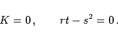
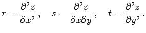

Charakteristisch für abwickelbare Flächen ist, daß
|  | (3.537) |
Die Bedeutung von r, s, und t entspricht (3.532b): 
| Beispiel A |
|
Kegel und Zylinder sind abwickelbare Flächen. |
| Beispiel B |
|
Einschaliges Hyperboloid und hyperbolisches Paraboloid sind zwar Regelflächen, können aber nicht auf eine Ebene abgewickelt werden. |